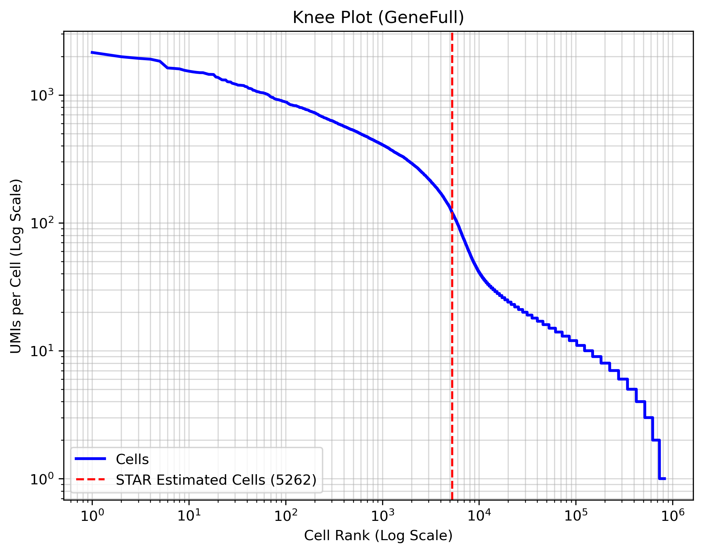

Overview
Samples
4
Median Unique Mapping
58.6%
Median Reads per Cell
285
Total Estimated Cells
11,222
Sample Directory
| Sample | Uniquely mapped reads % | Median Reads per Cell | Estimated Number of Cells | Sample report |
|---|---|---|---|---|
| ATAC_C1200 | 512 | Open | ||
| ATAC_C6991 | 239 | Open | ||
| RNA_C1200 | 58.87% | 232 | 5960 | Open |
| RNA_C6991 | 58.30% | 338 | 5262 | Open |
Demultiplexing
Demultiplex Stats
| Sample_Index | Sample_Name | Sample_Type | Total_reads |
|---|---|---|---|
| CTCTCTAT | ATAC_C6991 | ATAC | 284300061 |
| TAGATCGC | ATAC_C1200 | ATAC | 219590038 |
| AGAGTAGA | RNA_C6991 | RNA | 40132908 |
| TATCCTCT | RNA_C1200 | RNA | 36433285 |
FastQC (Demultiplexed)
fastqc_demux/<sample>/*_fastqc.html
- fastqc_demux/ATAC_C1200/ATAC_C1200.matched.R1_fastqc.html
- fastqc_demux/ATAC_C1200/ATAC_C1200.matched.R2_fastqc.html
- fastqc_demux/ATAC_C6991/ATAC_C6991.matched.R1_fastqc.html
- fastqc_demux/ATAC_C6991/ATAC_C6991.matched.R2_fastqc.html
- fastqc_demux/RNA_C1200/RNA_C1200.matched.R1_fastqc.html
- fastqc_demux/RNA_C1200/RNA_C1200.matched.R2_fastqc.html
- fastqc_demux/RNA_C6991/RNA_C6991.matched.R1_fastqc.html
- fastqc_demux/RNA_C6991/RNA_C6991.matched.R2_fastqc.html
ATAC QC
What these files mean: .q30.mapped metrics are captured after MAPQ>=30 filtering and before duplicate removal. .q30.rmdup metrics are captured after duplicate removal. Use the difference to estimate duplicate burden and retained unique signal.
ATAC Key Summary by Sample
| Metric | ATAC_C1200 | ATAC_C6991 |
|---|---|---|
| Estimated cells (ArchR, pre-dedup) | 3375 | 4953 |
| Estimated cells (ArchR, post-dedup) | 512 | 239 |
| Median nFrags per cell (ArchR, pre-dedup) | 1511 | 2070 |
| Median nFrags per cell (ArchR, post-dedup) | 1264.5 | 1235 |
| Median TSS enrichment (ArchR, pre-dedup) | 8.597 | 9.536 |
| Median TSS enrichment (ArchR, post-dedup) | 7.6995 | 7.525 |
| Median reads in TSS (ArchR, pre-dedup) | 286 | 400 |
| Median reads in TSS (ArchR, post-dedup) | 232 | 222 |
| Median reads in promoter (ArchR, pre-dedup) | 339 | 457 |
| Median reads in promoter (ArchR, post-dedup) | 280 | 271 |
| Median promoter ratio (ArchR, pre-dedup) | 0.10901199897881 | 0.108690176322418 |
| Median promoter ratio (ArchR, post-dedup) | 0.108760738292329 | 0.108512628624883 |
| Median reads in blacklist (ArchR, pre-dedup) | 14 | 17 |
| Median reads in blacklist (ArchR, post-dedup) | 12 | 14 |
| Median blacklist ratio (ArchR, pre-dedup) | 0.0040650406504065 | 0.00340367597004765 |
| Median blacklist ratio (ArchR, post-dedup) | 0.00466258788088186 | 0.00531914893617021 |
| CB-tagged alignments % (pre-dedup BAM) | 100.0000 | 100.0000 |
| Total reads (flagstat, pre-dedup) | 216497626 | 262220083 |
| Mitochondrial fraction (pre-dedup) | 23.39% | 23.42% |
| Total reads (flagstat, post-dedup) | 148569691 | 121628799 |
| Mitochondrial fraction (post-dedup) | 24.37% | 25.57% |
| Reads retained after dedup (%) | 68.62% | 46.38% |
RNA QC
Summary.csv Key Metrics by Sample
| Metric | RNA_C1200 | RNA_C6991 |
|---|---|---|
| Number of Reads | 14679916 | 17682685 |
| Reads With Valid Barcodes | 0.999998 | 0.999996 |
| Reads Mapped to Genome: Unique | 0.588725 | 0.582958 |
| Estimated Number of Cells | 5960 | 5262 |
| Median Reads per Cell | 232 | 338 |
| Median UMI per Cell | 171 | 244 |
| Total GeneFull Detected | 20177 | 20819 |
Alignment Summary Bar Chart
Uniquely MappedMulti-mappedUnmapped
RNA_C1200
U: 58.87% | M: 31.58% | Un: 9.55%
RNA_C6991
U: 58.30% | M: 31.55% | Un: 10.15%
STARsolo*/<sample>/*_knee_plot.png

